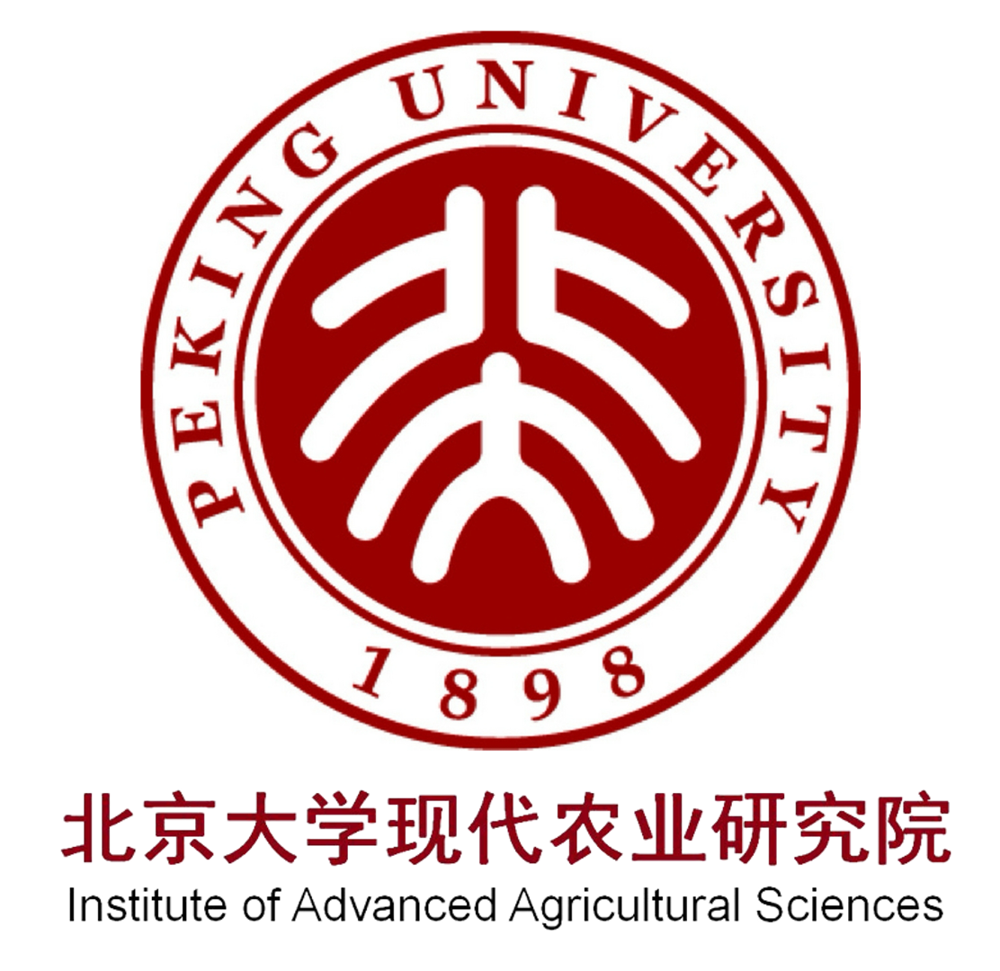
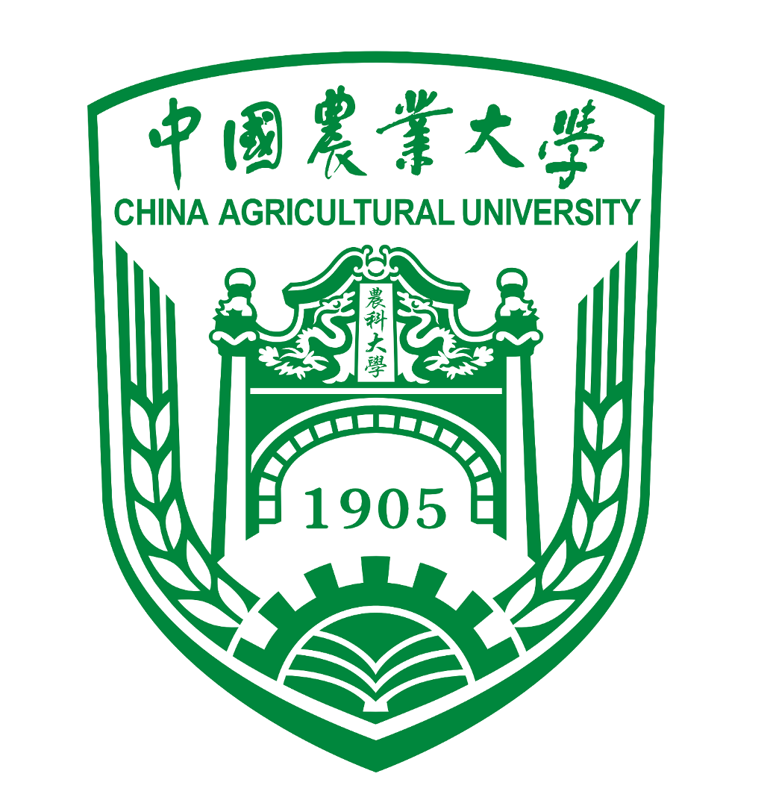
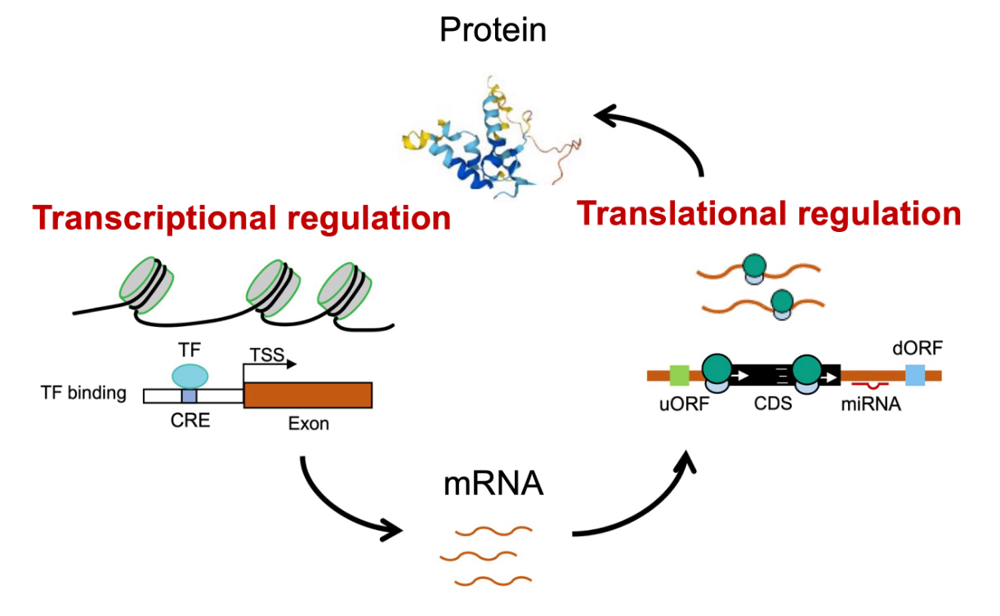
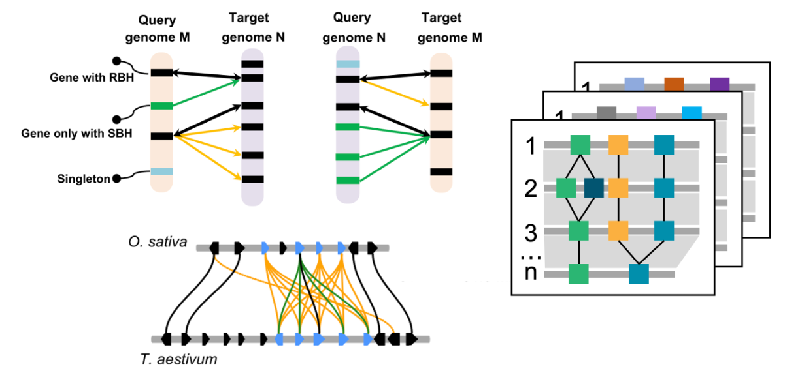
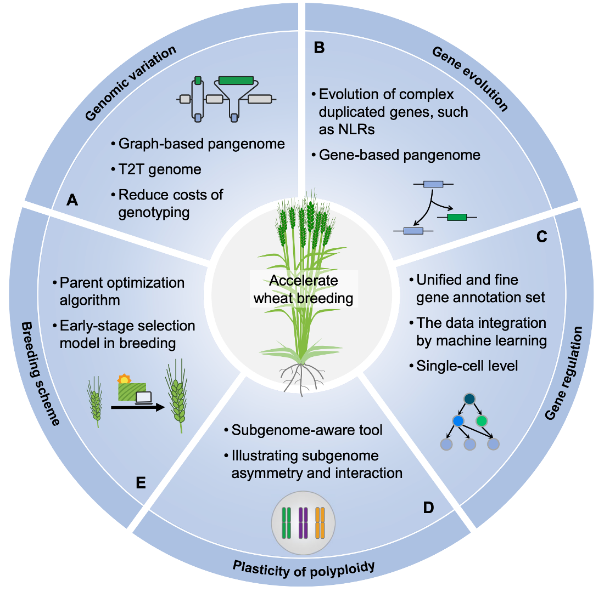

Position: Principal Investigator
Affiliation: Peking University Institute of Advanced Agricultural Sciences
Also affiliated with: Shandong Laboratory of Advanced Agricultural Sciences in Weifang, State Key Laboratory of Wheat Improvement
Address: 699 Binhu Road, Xiashan District, Weifang City
Email: yongming.chen@pku-iaas.edu.cn OR chen_yongming@126.com
ORCID: 0000-0002-2143-3134
Google Scholar: Profile
ResearchGate: Profile
Research Focus: Bioinformatics, Gene regulation, Genomics, Multi-omics, and Agricultural plant science


We analyze dynamic regulatory networks in wheat and other crops across multiple molecular layers, especially transcriptional and translational regulation, to reveal the genetic and molecular mechanisms underlying development and environmental adaptation.


We investigate the origin, variation, and evolution of important phenotypic traits, aiming to elucidate the molecular basis of genetic variation and adaptive evolution in genes and their regulatory networks.
We develop platforms for multi-omics data integration, comparative genomics, and candidate gene discovery, and aim to support intelligent molecular design breeding by integrating regulatory and evolutionary information.
